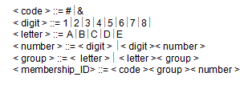

<div id="jsn-maincontent" class="span9 order1  row-fluid">
					<div id="jsn-maincontent_inner">
						<div id="jsn-centercol"><div id="jsn-centercol_inner">
									<div id="jsn-mainbody-content" class=" jsn-hasmainbody">
								<div id="jsn-mainbody-content-inner1"><div id="jsn-mainbody-content-inner2"><div id="jsn-mainbody-content-inner3"><div id="jsn-mainbody-content-inner4" class="row-fluid">
								
										
								
								<div id="jsn-mainbody-content-inner" class="span12 order1 ">
		
										<div id="jsn-mainbody">
										<div id="system-message-container">
	</div>

										<div class="item-page" itemscope itemtype="https://schema.org/Article">
	<meta itemprop="inLanguage" content="en-GB" >
	
		
						
		
	
	
		
								<div itemprop="articleBody">
		<p></p>
<h1 style="text-align: center;">BNF</h1>
<p><strong class="NormalContentHeading">Backus Naur Form</strong><br> When you write a program, each instruction you use must be constructed according to strict rules. You must pay great attention to getting the syntax of each instruction perfect or you will not be able to translate your program!</p>
 
<p>Once you have written the program in the programming language of your choice, you need to translate it into code that the computer understands. The process can be represented by the following diagram:</p>
<p style="text-align: left;" align="center"><br><strong class="NormalContentHeading" style="line-height: 1.5;">Compilation<br></strong>We have seen that to run a program, you must turn the source code into object code. We have already seen in an earlier chapter that translation can be split up into three sections:</p>
<p class="NormalContentHeading"><strong>The lexical analysis stage</strong></p>
<ul>
<li style="list-style-type: none;">
<ul style="list-style-type: disc;">
<li>The source code is looked at and any unnecessary parts of it are removed. Unnecessary parts would include comments and spaces.</li>
<li>The code is then grouped into tokens. A token is:</li>
</ul>
</li>
</ul>
<ul>
<ul>
<ul>
<li style="list-style-type: none;">
<ul>
<li style="list-style-type: none;">
<ul style="list-style-type: circle;">
<li style="list-style-type: none;">
<ul style="list-style-type: circle;">
<li>A keyword like FOR, PRINT and so on.</li>
<li>A symbol that has got a fixed meaning, for example, +, *.</li>
<li>Numerical constants.</li>
<li>User-defined variable names.</li>
</ul>
</li>
</ul>
</li>
</ul>
</li>
</ul>
</ul>
</ul>
<p><strong class="NormalContentHeading">The syntax analysis stage</strong><br> The syntax of the string of tokens created in the lexical analysis stage is checked to see if they obey the syntax rules for the language. The entire stream of tokens is split up (or 'parsed') into expressions and then these are checked against a database of syntax rules. There are a number of different ways to represent syntax definitions, such as using Backus Naur Form (BNF) or syntax diagrams. We are about to see these ways in action!</p>
<p><strong class="NormalContentHeading">Code generation and optimisation</strong><br> Code suitable for running on a CPU is generated and then checked for optimisation in this stage.</p>
<p><strong class="NormalContentHeading">Backus Naur Form (BNF)</strong><br> Assuming that lexical analysis has taken place, and the source code written by the programmer has been turned into a string of tokens, how does the computer check the tokens, to ensure that the rules for the language have been followed? This is where BNF comes in!<br> <br> <strong class="NormalContentHeading">How are syntax rules represented, so that syntax analysis can take place during compilation? </strong><br> There are three basic symbols you need to know:</p>
<p align="center"></p>
<p>This last definition simply means that the variable num can either be a 1 symbol or a 2 symbol or 3 and so on. The 1, 2, 3 etc in the last example have a special name. They are called ‘<strong>terminal symbols</strong>’ because they cannot be broken down any further.</p>
<p><span class="NormalContentHeading"><strong>An example using BNF</strong> <br> </span>How can you define a positive integer? A positive integer could be a number of any length. E.g. the following numbers are positive integers: 2,&nbsp; 243,&nbsp; 7199,&nbsp; 23244,&nbsp; 12222346 and so on. It can be done as follows:</p>
<p align="left"><br> But this will only allow you to represent <strong>single-digit</strong> numbers. How can you represent integers of <strong>any</strong> length? It can be done using a technique that has its roots in <strong>recursion</strong>.</p>
<p align="left">Consider the number 1524.</p>
<p>This is a digit (1) followed by an integer (524).<br> But (524) is a digit (5) followed by an integer (24).<br> But (24) is a digit (2) followed by an integer (4).<br> But (4) is a single digit.</p>
<p align="center"></p>
<p>An integer is defined as a digit followed by an integer. The recursion will stop when the final integer is a single digit. This is why we need the OR symbol in BNF, to enable us to drop out of the recursion. The final definition of an integer is:</p>
<p>Write out these definitions in English.</p>
<p align="center"></p>
<p>This definition will allow us to define any <strong><em>unsigned</em></strong> integer. Perhaps a better name for the meta variable would be <strong>unsigned_integer</strong> so we now have:</p>
<p align="center"></p>
<p>Suppose we wanted to represent <strong>signed</strong> integers, i.e. an integer with either a plus or a minus sign in front of it. How could we do this? There are a number of ways but one way is as follows:</p>
<p align="center"></p>
<p>We simply defined a new meta variable called ‘sign’. Then we included it in our definition of signed_integer.</p>
<p class="NormalContentHeading"><strong>Another example</strong><br> <span class="NormalContent">Consider this definition of a membership ID:</span></p>
<p></p>
<p>We started building up this definition of membership_number by defining the meta variables that didn’t use recursion because they are the simplest ones to deal with. Then we defined the more complex meta variables, the ones that did use recursion. Finally, we created a meta variable for the membership ID from the meta variables we just created.</p>
<ul>
<li style="list-style-type: none;">
<ul style="list-style-type: disc;">
<li><strong>&amp;BAEE427</strong> is a valid membership ID.</li>
<li><strong>#D56177354</strong> is a valid membership ID.</li>
<li><strong>&amp;EEE8</strong> is a valid ID.</li>
<li><strong>#AAEF52</strong> is not a valid ID because F is not a valid letter.</li>
<li><strong>#7233</strong> is not a valid ID because you must have a letter from A to E after the # or &amp;.</li>
<li><strong>&amp;aC3655</strong> is not valid because a small ‘a’ is not allowed according to the definition of letter.</li>
<li><strong>&amp;BBE593433</strong> is not valid because we are not allowed the digit 9.</li>
<li><strong>CE67</strong> is not valid because it doesn’t begin with # or &amp;.</li>
</ul>
</li>
</ul>
<p>Now test each other. Create membership IDs and see if a friend can tell you correctly whether they are valid or not.</p>
<p></p>	</div>

	
							</div>

									</div>
				
							</div>
							
				        							
							
							</div></div></div></div></div>			
							
							
		        				</div></div> 
				</div></div>